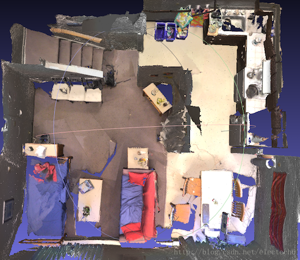
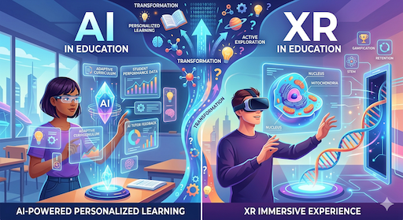
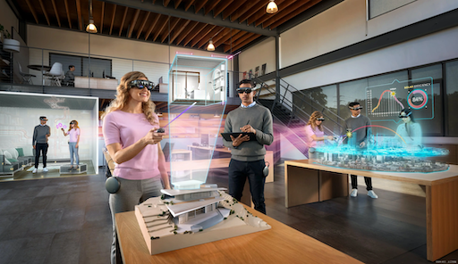
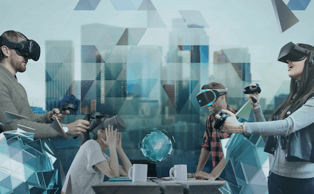

|
Visual computing is a generic term for all computer science disciplines dealing with images and 3D models, such as computer graphics, image processing, visualization, computer vision, virtual and augmented reality, video processing, and computational visualistics. Visual computing also includes aspects of pattern recognition, human computer interaction, machine learning and digital libraries. The core challenges are the acquisition, processing, analysis and rendering of visual data (mainly images, video, and 3D models). Application areas include industrial quality control, medical image processing and visualization, surveying, robotics, multimedia systems, virtual heritage, special effects in movies and television, and ludology. Visual computing also includes digital art and digital media studies. (From Wikipedia)
| The Visual Computing Group (VCG) at NJUST spans research activities in Computer Vision, Computer Graphics, Image Processing, Virtual Reality, Augmented Reality, but also includes aspects of Pattern Recognition, and Machine Learning. These different areas all focus on the processing of visual data (mainly 3DGS, point clouds, meshes, and images): acquisition, processing, representation, analysis, understanding, rendering, and security. In our research, we view visual computing as a closed loop: analysis methods (i.e. computer vision) extract rich scene models from visual data (e.g. images, 3D shapes), and synthesis methods (i.e. computer graphics) convert those models back into observable visual data. The two sides of this loop are mutually reinforcing: analysis of large-scale visual data helps to build/learn better synthesis methods (e.g. generative adversarial networks), and the outputs of those synthesis models help to build\/learn better analysis methods (e.g. synthetic training data for computer vision systems). |  |
Our work currently focuses on 1) 3D vison, 2) visual data synthesis and generation, 3) visual data quality assessment, 4) virtual reality and augmented reality, 5) security and privacy in AIGC.
3D Vison
3D vision is a subfield of computer vision that focuses on enabling machines to perceive, understand, and reconstruct the 3D structure of the world from visual data. Its core research encompasses the entire pipeline from 2D inputs (such as single or multi-view images, video, or depth sensors) to 3D representations (including point clouds, meshes, volumetric fields, and neural implicit representations like NeRF). The field increasingly leverages deep learning, differentiable rendering, and foundation models to bridge the gap between 2D perception and physical 3D reality. By modeling geometry, texture, and spatial relationships, 3D vision bridges 2D visual signals with real-world spatial understanding, supporting accurate perception and interaction in complex environments. Practical applications span autonomous driving, robotics, augmented reality, medical imaging, and virtual reality. Currently, our research in the field of 3D vision mainly focuses on 3D understanding and 3D reconstruction.
 Point Cloud Segmentation |
 Point Cloud Sampling |
 Point Cloud Compression |
 Point Cloud Recognition |
 Point Cloud Classification |
 3D Reconstruction |
 Thin Structure Reconstruction |
Visual Data Synthesis and Generation
Visual data synthesis and generation focuses on 3D modeling, data synthesis and generation. Research in 3D modeling traditionally encompasses geometric processing—such as point cloud denoising, sampling, and surface reconstruction—to transform raw sensor data into topologically consistent meshes or volumetric grids. Modern advancements have shifted toward neural representations, utilizing Neural Radiance Fields (NeRF) and 3D Gaussian Splatting to encode complex scenes into continuous functions for photorealistic synthesis. Parallelly, data synthesis and generation aim to generate high-quality synthetic images, textures, materials, and full 3D assets through procedural generation, generative models, and differentiable rendering. Currently, our research in 3D modeling and data synthesis mainly focuses on 3D model processing, 3D content generation, and multispectral image synthesis.
 Point Cloud Denoising |
 Mesh Denoising |
 3D Gaussian Splatting |
 Neural Radiance Fields |
 Point Cloud Generation |
 Mesh Generation |
 Infrared Image Synthesis |
 Visible Image Synthesis |
Visual Data Quality Assessment
Visual data quality assessment focuses on designing objective and subjective metrics to quantify the perceived fidelity, geometric fidelity, structural integrity, and physical realism of digital content. This field bridges machine perception and human vision, providing theoretical guidance and quantitative tools for optimizing acquisition, transmission, and reconstruction systems in autonomous driving, 3D reconstruction, and immersive media. Currently, our research in visual information quality assessment mainly focuses on point cloud quality assessment, AIGC quality assessment, and multispectral synthetic image quality assessment.
 Point Cloud Quality Assessment |
 Infrared Image Quality Assessment |
 AIGC Quality Assessment |
Virtual Reality & Augmented Reality
In the fields of virtual reality (VR) and augmented reality (AR), our research centers on next-generation spatial computing and intelligent interaction, aiming to break down the boundaries between the physical and digital worlds. We focus on enabling machines to “comprehend” three-dimensional space and allowing virtual content to blend “seamlessly” with reality. Our core research revolves around spatial intelligence and immersive rendering: at the infrastructure layer, we construct dynamic digital twins via 3D environment reconstruction and semantic understanding; at the presentation layer, we investigate neural rendering and lightweight technologies to achieve photorealistic, highly consistent virtual-real fusion; at the application layer, we integrate multimodal natural human-computer interaction with generative AI to endow XR systems with active perception and generative capabilities, advancing virtual reality from merely “visible” to “comprehensible and interactive”. At present, our research primarily covers four major directions: spatial computing (3D environment reconstruction, 3D environment perception, spatial semantic understanding), AI + XR (AIGC-enabled XR, large model-driven interaction and scene comprehension), virtual-real fused rendering (neural rendering, lightweighting techniques for massive scenes, consistent virtual-real fusion rendering), and multimodal human-computer interaction.
 Spatial Computing |
 AI + XR |
 Virtual-real Fused Rendering |
 Human-computer Interaction |
Security and Privacy in AIGC
AIGC Security and Privacy focuses on proactive defense and passive authentication mechanisms for generative visual content, striving to build trustworthy security infrastructure for the AIGC ecosystem. The explosive growth of AIGC technologies, together with generative paradigms such as diffusion models, NeRF and 3DGS, has lowered the barrier to creating visual content to an unprecedented level. However, this has also triggered severe crises in generative content governance, including malicious tampering, unauthorized theft and Deepfake forgery. At present, our research primarily centers on digital watermarking, tampering detection and localization technologies for AIGC-generated visual content including images, NeRF and 3DGS.
 Digital Watermarking |
 Tampering Detection |